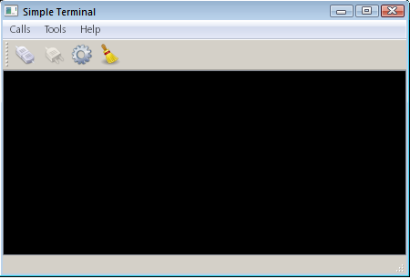

Terminal Example
Shows how to use various features of QSerialPort.
Terminal shows how to create a terminal for a simple serial interface by using Qt Serial Port.

This example shows the main features of the QSerialPort class, like configuration, I/O implementation and so forth. Also, the class QSerialPortInfo is invoked to display information about the serial ports available in the system.
QSerialPort supports two general programming approaches:
- The asynchronous (non-blocking) approach. Operations are scheduled and performed when the control returns to Qt's event loop. QSerialPort emits a signal when the operation is finished. For example, QSerialPort::write() returns immediately. When the data is sent to the serial port, QSerialPort emits bytesWritten().
- The synchronous (blocking) approach. In non-GUI and multithreaded applications, the
waitFor...()functions can be called (i.e. QSerialPort::waitForReadyRead()) to suspend the calling thread until the operation has completed.
In this example, the asynchronous approach is demonstrated. The Blocking Slave example illustrates the synchronous approach.
Our example contains some GUI widgets:
MainWindow(terminal/mainwindow.cpp) - is the main application window that contains all the working logic for the serial port programming, including configuration, I/O processing and so forth, while inheriting the QMainWindow.Console(terminal/console.cpp) - is the central widget of the main window, displaying the transmitted or received data. The widget is derived from the QPlainTextEdit class.SettingsDialog(terminal/settingsdialog.cpp) - is a dialog for configuring the serial port, as well as for displaying the available serial ports and information about them.
The serial port is instantiated in the MainWindow constructor. The main widget is passed as the parent, so the object deletion happens automatically according to the parent and child mechanism in Qt:
MainWindow::MainWindow(QWidget *parent) : QMainWindow(parent), m_ui(new Ui::MainWindow), m_status(new QLabel), m_console(new Console), m_settings(new SettingsDialog), m_serial(new QSerialPort(this)) { ... m_serial(new QSerialPort(this))
The only QSerialPort signal invoked in this example is readyRead(), which shows that new data has been received and hence available:
...
connect(m_serial, &QSerialPort::readyRead, this, &MainWindow::readData);
...
}
Clicking on the Connect button invokes the openSerialPort() slot:
void MainWindow::openSerialPort() { const SettingsDialog::Settings p = m_settings->settings(); m_serial->setPortName(p.name); m_serial->setBaudRate(p.baudRate); m_serial->setDataBits(p.dataBits); m_serial->setParity(p.parity); m_serial->setStopBits(p.stopBits); m_serial->setFlowControl(p.flowControl); if (m_serial->open(QIODevice::ReadWrite)) { m_console->setEnabled(true); m_console->setLocalEchoEnabled(p.localEchoEnabled); m_ui->actionConnect->setEnabled(false); m_ui->actionDisconnect->setEnabled(true); m_ui->actionConfigure->setEnabled(false); showStatusMessage(tr("Connected to %1 : %2, %3, %4, %5, %6") .arg(p.name).arg(p.stringBaudRate).arg(p.stringDataBits) .arg(p.stringParity).arg(p.stringStopBits).arg(p.stringFlowControl)); } else { QMessageBox::critical(this, tr("Error"), m_serial->errorString()); showStatusMessage(tr("Open error")); } }
In this slot, the settings are read from SettingsDialog and an attempt is made to open and initialize the serial port accordingly. If successful, the status bar displays a message that the opening was successful with the given configuration; otherwise, a messagebox is displayed with the appropriate error code and message. If the serial port settings have never been called then the terminal attempts to open the port with the default settings: 9600 8N1.
Clicking on the Disconnect button invokes the closeSerialPort() slot:
void MainWindow::closeSerialPort() { if (m_serial->isOpen()) m_serial->close(); m_console->setEnabled(false); m_ui->actionConnect->setEnabled(true); m_ui->actionDisconnect->setEnabled(false); m_ui->actionConfigure->setEnabled(true); showStatusMessage(tr("Disconnected")); }
In this case, handled by the closure of the serial port.
Typing characters in the console invokes the writeData() slot:
void MainWindow::writeData(const QByteArray &data) { m_serial->write(data); }
This slot sends the characters typed in the given Console widget to the serial port - see terminal/console.cpp.
When the serial port receives new data, the signal readyRead() is emitted, and that signal is connected to the MainWindow::readData() slot:
void MainWindow::readData() { const QByteArray data = m_serial->readAll(); m_console->putData(data); }
This slot reads the data from the serial port and displays that in the Console widget.
Clicking on the Configure button invokes the show() slot which belongs to the SettingsDialog widget.
This method (terminal/settingsdialog.cpp) displays the SettingsDialog, in which the user can choose the desired serial port, see the information about the selected port, and set the desired parameters of the given serial port.
Running the Example
To run the example from Qt Creator, open the Welcome mode and select the example from Examples. For more information, visit Building and Running an Example.
See also Blocking Slave Example.